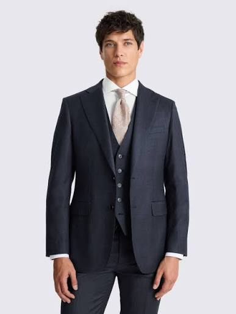
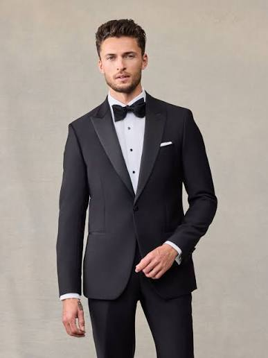
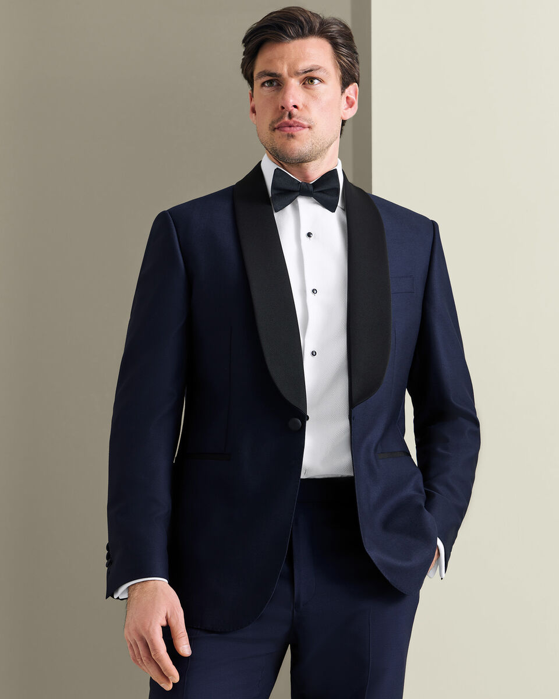
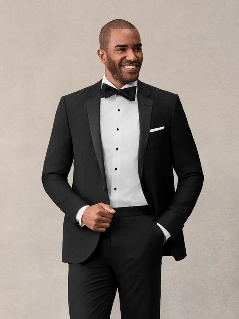

Down below, you can find information about our prices for our normal suits, and our premium suits.
| Suit Type | Description | Price |
|---|---|---|
| Single-Breasted | A jacket and trouser set featuring a jacket with a single vertical column of one to three buttons and a narrow, minimal front overlap. | $109.99 |
| Three-Piece | A formal menswear ensemble that pairs a matching jacket and trousers with a coordinating waistcoat cut from the same fabric | $149.99 |
| Business Formal | A sharply tailored, matching two- or three-piece ensemble in a conservative dark color like navy, charcoal, or black, designed to project authority and professionalism in corporate or executive settings. | $199.99 |
| Suit Type | Description | Price |
|---|---|---|
| Peak Lapel | A tailored jacket featuring lapels that angle upward and outward toward the shoulders, creating a sharp, formal look often worn for tuxedos, double-breasted suits, and power-dressing business attire. | $499.99 |
| Shawl Lapel | Features a smooth, continuous rounded curve of satin or grosgrain fabric that flows uninterrupted from the back of the neck to the jacket's single-button closure. | $799.99 |
| Notch Lapel | Features a jacket with a V-shaped cutout or notch where the collar meets the lapel, making it the most common, versatile, and traditional choice for business and everyday wear. | $999.99 |




